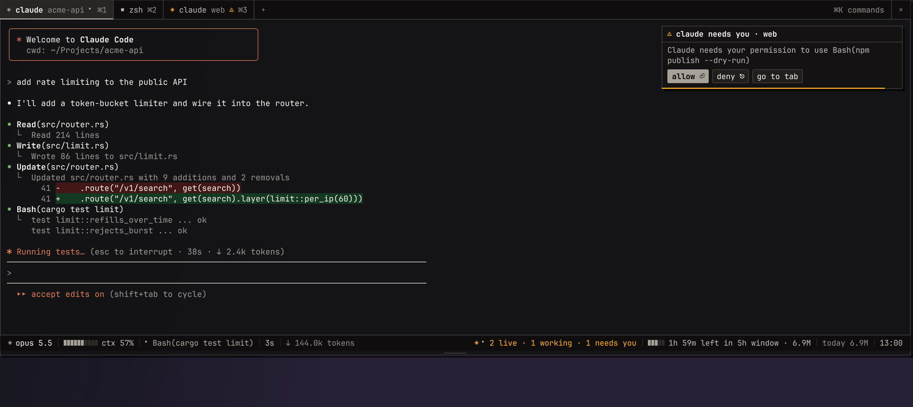
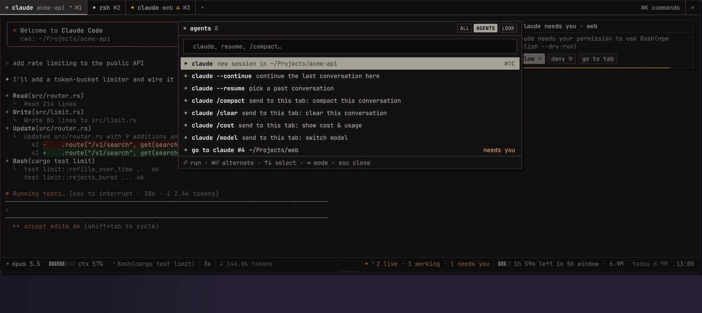
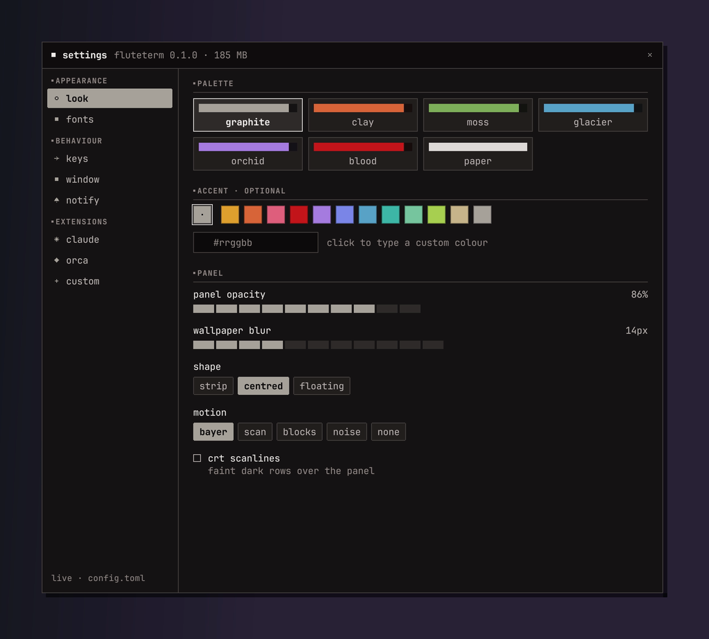

fluteterm slides down from under the menu bar on any screen, over any app. Every tab keeps running when you close it, and your Claude Code sessions report what they're doing. It looks like pixel art and reads like a terminal.
Built from scratch in Rust: about 70 MB of memory, 0% CPU when idle, crisp on Retina.
A global hotkey you can record, on the screen under your mouse, over full-screen apps and on every Space. See-through with native blur.
Quit it and your shells, builds and agents keep running. Start it again and they're all back. After a reboot, tabs reopen where they were.
Per-tab agent state, a context meter, the 5-hour usage window, and answers to permission prompts without switching tabs.
Worktrees and agents in the status bar, ⌘⇧O to browse them, live attach to an agent's terminal.
⌘K for tabs, agents, themes and settings, with fuzzy search. Scriptable from the CLI too.
Themes, your own accent colour, fonts, shapes and motion, all live. Add tab types, status segments and commands without code.

fluteterm install claude) and one click to remove.Each tab lives in an invisible tmux session. Quitting fluteterm only detaches, so long builds, dev servers and Claude conversations carry on. The next start re-attaches everything: same tabs, same order, same directories. After a reboot, Claude tabs resume their conversation.


Text is smooth and readable. The pixel feel lives in the details: 1-pixel lines, notched corners, block meters, dithered textures and a stepped, dissolving drop. Pick an accent:
| F12 | drop down / pull up (any hotkey you record) |
| ⌘T ⌘W | new tab in the same directory / close tab |
| ⌘1…⌘9 | switch tabs |
| ⌘K | command palette |
| ⌘⇧C | new Claude Code session here |
| ⌘, | settings |
| ⌘-click | open a URL or path |
brew services start fluteterm